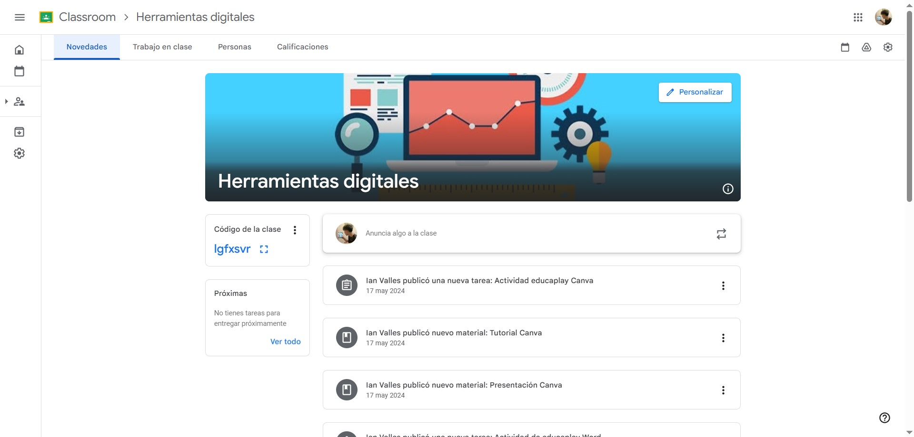
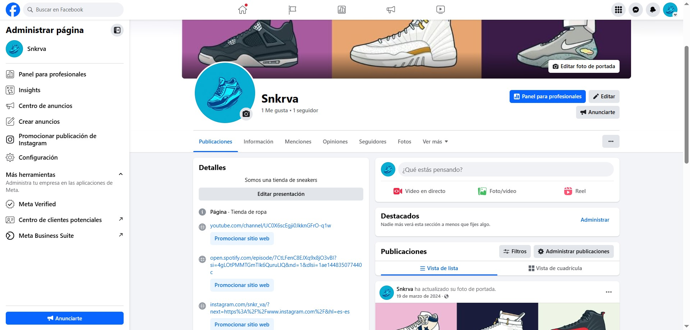
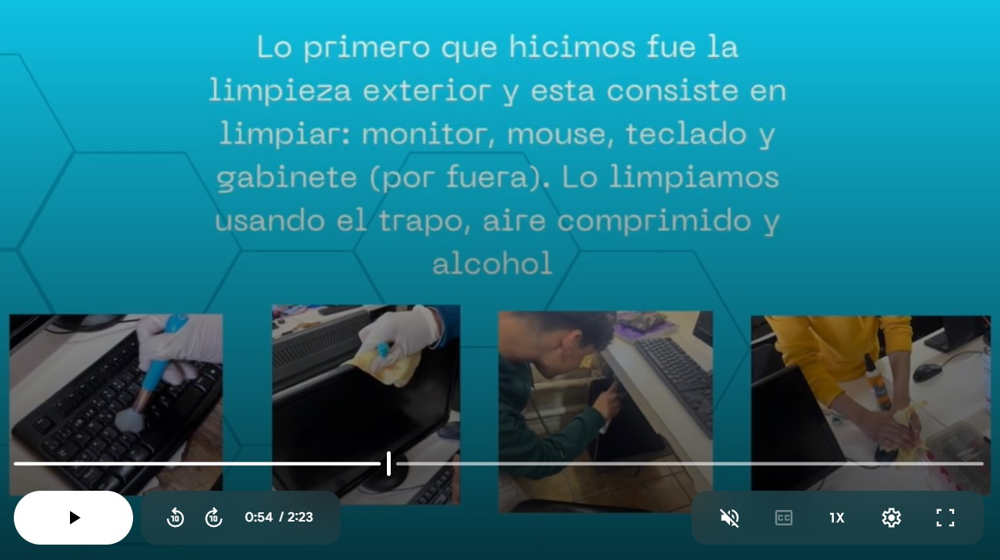
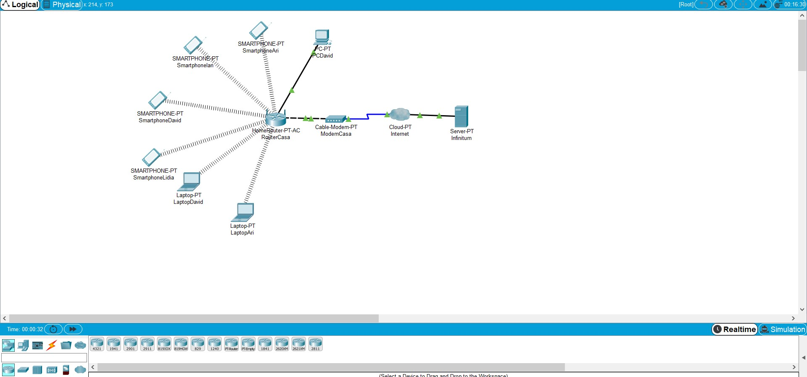

| Módulo 2 | Tarea | Imagen |
|---|---|---|
| Submódulo 1: Comunidades Virtuales | Proyecto
Era el proyecto final del submódulo 1 en el segundo bimestre, consistía en hacer una clase de Classroom, subir material de ciertos temas. Era un trabajo en equipo, uno tendría el rol de maestro y otros de estudiantes, se tenian que subir tareas por parte de los "alumnos" y el "maestro" calificarlas. |
 |
| CV_act9 Durante todo el semestre estuvimos trabajando con un negocio ficticio, teníamos que crear redes sociales, podcast y esquemas sobre este. En esta actividad era crear una pagina de Facebook sobre el negocio y en la información poner los links hacia las otras redes sociales de el negocio |
 | |
| Submódulo 2: Matenimiento y Redes de computo | MR_practica_MP Era la práctica final del primer bimestre, se trataba de hacerle mantenimiento a una CPU que bachilleres nos prestaba, tenias que desarmarla, limpiarla y volverla a armar. Tenias que documentar todo el procesoy después hacer un video expplicando los pasos y una infografía explicando que era el mantenimiento preventivo |  |
| DMR_practica_PKT-4 Era la última práctica del segundo bimestre, se tenía que diseñar la red de internet de tu casa a través de la app de Cisco Packet Tracer, además de diseñarla tenias que configurarla y hacer que funcione |  |